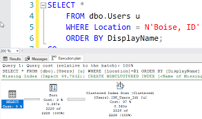

Building a REST API with Node.js & Express
Step-by-step guide to creating a secure REST API with CRUD operations and connecting it to a MySQL database.
Read MoreCreating a Responsive Dashboard UI
How I built a clean, responsive dashboard using HTML, CSS (Flexbox & Grid), and a bit of JavaScript.
Read More
Designing My Portfolio Website
Behind the scenes of building my personal portfolio — layout, colors, and making it mobile-friendly.
Read More10 SQL Queries Every Data Analyst Should Know
From SELECT and JOINs to aggregations and window functions — examples with real-world datasets.
Read More
